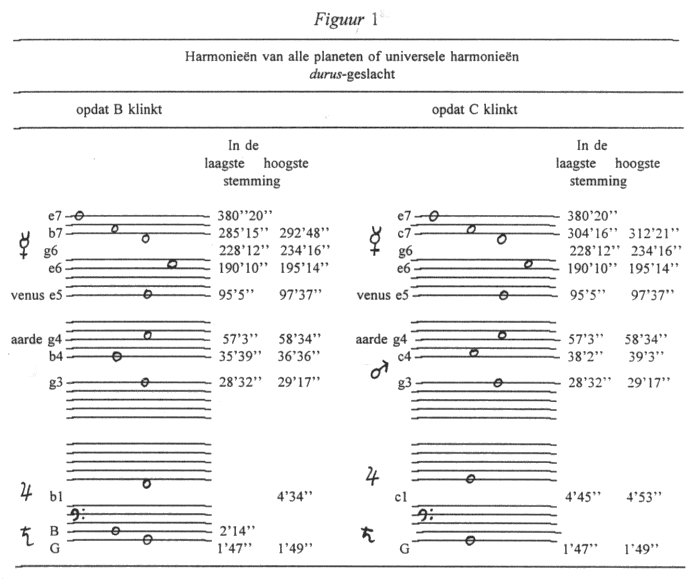
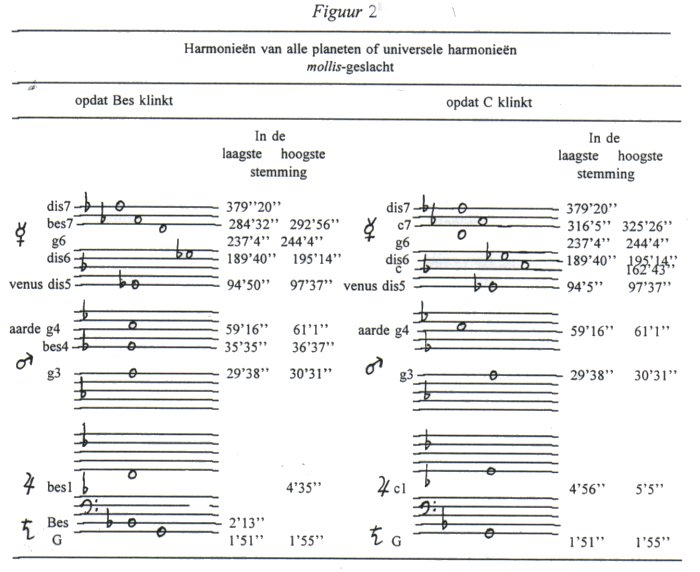
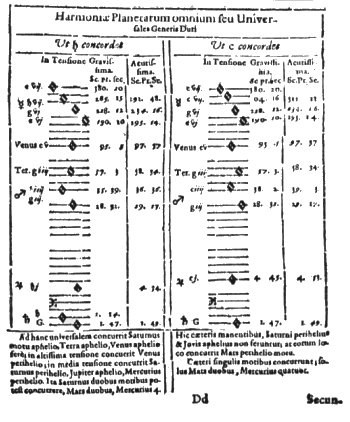
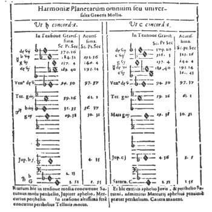
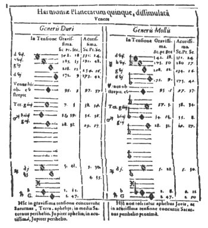
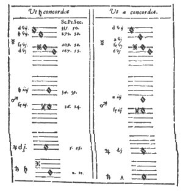

Inhoudsopgave
De modi Inhoudsopgave
De modi  De vier stemmen: diskant,
alt, tenor en bas De vier stemmen: diskant,
alt, tenor en bas
De meerstemmigheid
In het zevende hoofdstuk beschrijft Kepler hoe
meerstemmigheid kan worden afgeleid uit de schijnbare snelheden, hierbij gaat
hij uit van de gegevens uit de rechterkolom van tabel 1 (saturnus A:P verhoudt
zich als 4:5, etc.). Dit hoofdstuk luidt hij als volgt in:
‘Nu is nodig, Urania, een groot geluid, terwijl ik op
de harmonische ladder van de hemelse bewegingen naar grotere hoogten opklim,
daarheen waar het ware, verborgen origineel van de wereldbouw bewaard
wordt.’ (Nunc opus, Vranie, sonitu majore: dum per scalam Harmonicam
coelestium motuum, ad altiora conscendo; qua genuinus Archetypus fabricae
Mundanae reconditus asservatur.(1)).
De meerstemmige muziek, zo vervolgt Kepler, die in de
oudheid onbekend was, is de waarachtige spiegel van de wereld: in haar
openbaren zich de geheimen van de Schepping aan de geesten van de mensen.(2) Meerstemmigheid in de Harmonie der
Sferen is Keplers grote vernieuwing; deze meerstemmigheid kan voorkomen als
twee-, drie-, vier-, vijf- of zesstemmigheid, dus tussen twee tot zes planeten.
In de hemel klinken niet meer dan zes stemmen, want de maan heeft geen eigen
stem, maar zingt met de aarde mee. (Verum heus vos, in coelo plures quam sex
non concordant. Nam Luna seorsim suam Monodiam cantillat, Terris ut cunis
affidens.(3)).
Kepler begint met de opmerking dat hij de harmonische verhoudingen tussen
snelheden van naburige planeten reeds getoond heeft (tabel 1, linkerkolom).
Meer bijzonder echter, zo vervolgt hij, is de harmonie die ontstaat wanneer
twee planeten tegelijkertijd in hun apsis staan (de apsis wordt gedefinieerd
als elk der uiteinden van de lijn die de twee uiterste punten van de grote as
van een ellips met elkaar verbindt, deze uiterste punten komen natuurlijk
overeen met aphelium en perihelium).(4)
Deze gebeurtenis is zeer zeldzaam, zeker wat betreft de buitenste planeten (in
Keplers tijd jupiter en saturnus), die immers het langzaamst bewegen. Kepler
geeft jupiter en saturnus dan ook als voorbeeld voor de zeldzaamheid van deze
gebeurtenis.
In de tussentijd echter kunnen de planeten ook harmonieën produceren.
Bijvoorbeeld (zie tabel 3): saturnus beweegt van G naar B, jupiter van B naar d
(N.B. gezien de reductie in tabel 2 in werkelijkheid een octaaf hoger!, vandaar
intervallen als een decime etc.), buiten de apsis-intervallen (saturnus A en
jupiter P: G-d, een duodecime; ten tweede: saturnus P en jupiter A: B-B, een
octaaf) kunnen dus bijvoorbeeld ook een grote of kleine decime (G-B, B-d, A-c)
ontstaan, of een undecime (G-c, A-d), en, gezien de continue (glissando)
beweging, alles daartussenin.
Tweestemmigheid komt zo het meest voor, temeer daar de
andere planeten (mercurius, venus, aarde en mars) sneller bewegen, en dus vaker
harmonische verhoudingen samenstellen. Dit laatste is zeker het geval wat
betreft mercurius, vanwege diens grote snelheid, en dus grote ambitus, kan deze
bijna altijd in een harmonie worden ingepast.(5)
Ook driestemmige harmonieën komen redelijk vaak voor,
hoewel minder vaak dan tweestemmige. Het lijkt erop, zo zegt Kepler, dat
driestemmige harmonieën vanwege de relatief grote snelheid van mars, aarde
en mercurius tussen deze drie vaker voorkomen. Maar vooral venus moet, vanwege
haar geringe beweeglijkheid, geduldig wachten tot haar toon mee kan klinken met
de anderen.(6)
Harmonieën tussen vier planeten hebben echter al
honderden jaren nodig om te ontstaan, harmonieën tussen vijf planeten meer
dan myriaden van jaren; een Eeuwigheid scheidt de harmonieën van zes
planeten.(7)
Kepler vermoedt dat er slechts eenmaal een harmonie tussen
zes planeten zich heeft voorgedaan, namelijk bij de schepping, aan het begin
van de tijd en hij weet niet of er ooit twee zulke momenten zullen zijn
(misschien dat Kepler zich voorstelde dat op de jongste dag in de hemelen voor
de tweede en laatste maal een harmonieus akkoord van zes stemmen, zes planeten,
zou klinken, waarna de hemelen voor eeuwig zouden verstommen).(8)
Wanneer er nu een zestemmige harmonie in de hemel te vinden is, dan is deze
volgens Kepler de constellatie van de planeten aan het begin van de schepping
(men zou dus, als deze harmonie aanwijsbaar is, in de tijd terug kijken naar
het ‘begin’). ‘Te vragen is derhalve’, zo vervolgt
Kepler, ‘òf, en op hoeveel manieren de bewegingen van de planeten
in één gemeenschappelijke harmonie kunnen worden
samengebracht.’ (Quaerendum igitur, an et quot omnino formis
redigantur omnium sex planetarum motus in unam communem harmoniam?(9)).
Het uitgangspunt bij de samenstelling van deze zesstemmige
harmonieën zijn de bewegingen van aarde en venus, omdat deze vanwege hun
geringe beweging maar twee consonanten met elkaar kunnen vormen. (Methodus
inquisitionis haec est, ut incipiamus a Terra et Venere; quia hi duo faciunt
consonantias non plures duabus, et (quod huius rei causam continet) per
intensiones motuum brevissimas.(10)).
Als nu voor de aarde weer de ‘g’ wordt genomen en voor venus een
‘e’ respectievelijk een ‘es’, dan weet Kepler hiermee
twee ‘sceleta Harmoniarum’(11) samen te stellen (best te vertalen als
‘harmonisch raamwerk’, hoewel ‘akkoord’ alleszins ook
mogelijk is): een durus-raamwerk, gebaseerd op het interval g-e (de
grote sext), en een mollis-raamwerk, gebaseerd op het interval g-es (de
kleine sext). Er kunnen meerdere noten uit een planeetinterval in een raamwerk
gepast worden wanneer deze consoneren. Een ‘sceletum’ is dus
een verzameling mogelijke akkoorden, waarvan er echter maar een op een bepaald
moment ‘klinkt’.
Kepler hanteert twee stemmingen (‘tensiones’): een lage
stemming en een hoge. De reden hiervoor is dat de schijnbare snelheid van een
planeet continu varieert (dichterbij de zon sneller, omgekeerd wanneer verder
weg). Als alle tonen uit een raamwerk binnen hun eigen maximale (schijnbare)
snelheid blijven dan kunnen de tonen (die met een bepaalde schijnbare snelheid
corresponderen) binnen een bepaalde stemming verhoogd of verlaagd worden, om zo
de verschuivingen in snelheid op te vangen.
De twee durus-raamwerken
In het durus-raamwerk worden de grondwaarden bepaald
door aarde A (57’3’’) voor de laagste stemming en door venus
P (97’37’’) voor de hoogste stemming. Een voorbeeld: uit
venus P (97’37’’) ontstaat in de hoge stemming jupiter A als
volgt: 97’3’’ gedeeld door vier octaven en een kwart (van e5
naar b) = 97’37’’ : 16 : 4/3 = 4’34’’,
hetgeen de waarde is van jupiter A in figuur 1 (zie onder, of afbeelding 35a
voor het origineel uit HM.), en binnen de marge jupiter A-P
(4’30’’ - 5’30’’) valt. De overige waarden
worden evenzo afgeleid.
Door deze wijze van berekenen ontstaan er ander tonen (corresponderend met
andere schijnbare snelheden) voor de verschillende planeten; nogmaals, de enige
eis die Kepler stelt is dat de nieuwe waarden binnen de maximale waarden voor A
en P van de verschillende planeten vallen.(12) Gevolg hiervan is bijvoorbeeld dat mercurius’ e7
in de hoogste stemming is weggevallen: de hoogste stemming zou zijn
390’28’’ (2 x 195’14’’ van het octaaf e6
daaronder), dit is meer dan de maximale waarde van
384’0’’.
Er zijn echter wel enige ‘onzuiverheden’ in figuur 1. Kepler gaat
namelijk niet helemaal nauwkeurig te werk: de waarde van mars P
(38’2’’) in figuur 1 (lage stemming, tweede akkoord) is een
seconde groter dan toegestaan; een seconde meer dan 38’1’’
(zie tabel 1). Deze afwijking wordt gecompenseerd door het feit dat mars P nog
een toon heeft, hierdoor blijft de universele harmonie aanwezig, zelfs wanneer
men zeer strikt zou zijn en mars P c4 zou weglaten (wanneer een planeet
meerdere tonen heeft is het verlies van een minder erg). Jupiter echter heeft
in de lage stemming (figuur 1, eerste akkoord) geen toon, hierdoor is er in
feite geen sprake meer van ‘universele harmonie’ (er ontbreekt een
toon!), hetgeen blijkbaar geen reden was voor Kepler zijn berekeningen te
herzien.(13)
Dezelfde berekeningen als bovenstaande heeft Kepler gebruikt voor het tweede
‘universele akkoord’, maar nu zo, dat er een ‘c’ in
plaats van een ‘b’ verschijnt. De reden voor deze tweede berekening
is dat Kepler probeert zo veel mogelijk extreme bewegingen in de akkoorden
onder te brengen, want hoe meer extreme bewegingen, hoe
‘universeler’ het akkoord, en hoe universeler het akkoord, hoe
dichterbij Kepler aan het moment van de schepping raakt, en daarmee aan zijn
uiteindelijke doel: het onthullen van Gods bouwplan voor deze wereld.
Figuur 1 toont deze twee universele akkoorden en de extreme bewegingen die
ermee worden uitgedrukt (zie ook afbeelding 28a voor het origineel uit
HM.):

Het eerste akkoord (links) in figuur 1 bestaat uit de
tertsligging van een e-klein akkoord (in totaal 4 x 2 x 2 = 16 combinaties);
het tweede akkoord (rechts) uit een kwartsextligging(15) van een C-groot akkoord (in totaal 4 x 2 = 8
combinaties). Overigens, de vele lijnen boven de onderste notenbalk (saturnus,
met f-sleutel) dienen alle als hulp-lijnen opgevat te worden.
De twee mollis-raamwerken
Evenzo construeert Kepler twee akkoorden met het
mollis-raamwerk: een tertsligging van en Es-groot akkoord en en
kwartsextligging van een c-klein akkoord, de vele mollen in deze figuur (2, zie
onder, of afbeelding 35b voor het origineel uit HM.) duiden slechts de
plaats van de bes aan, niet zozeer een actuele verlaging.
Het verschil met figuur 1 is dat Kepler nu alleen uitgaat van de extremen van
venus (P: 97’37’’ en A: 94’50’’) en aan de
hand van alleen deze de overige tonen berekent. (bijvoorbeeld: aarde A is nu
59’16’’ in plaats van 57’3’’, maar zie ook
de snellere beweging van saturnus; deze nieuwe bewegingen bevinden zich echter
wel binnen hun maxima). Boven deze figuur (2), eerste akkoord (e-klein) staat
in de druk uit 1619 ‘ut h concordet’, dit nu is onjuist, er
had ‘ut b concordet’ moeten staan, want niet de b, maar de
bes klinkt (zie afbeelding 28b).
Ook hier wordt een onzuiverheid aangetroffen: mercurius’ c6 ligt beneden
de maximaal toegestane waarde (162’43’’ in plaats van
164’0’’). Wederom wordt dit gemotiveerd uit het feit dat dat
Kepler zo veel bewegingen als maar mogelijk zijn in zijn universele akkoorden
onder wil brengen.

Uit deze ‘universele harmonieën’ concludeert Kepler dat:
‘Derhalve bewijst de astronomische ervaring dat er
universele harmonieën van alle bewegingen kunnen ontstaan, en wel in twee
geslachten durus en mollis en in beide geslachten van
tweeërlei vorm, of (als dit toegestaan is) van een tweevoudige toonsoort;
in elk van de vier gevallen met een zekere stemmingsomvang en ook met een
zekere verscheidenheid van de afzonderlijke harmonieën van saturnus, mars,
en mercurius, en elk van deze met de anderen. De ervaring bewijst tevens dat
dit niet alleen gebeurt met de tussenliggende bewegingen, maar geheel en al met
alle extreme bewegingen, behalve die van het aphelium van mars en het
perihelium van jupiter.’ (Testatur igitur experientia Astronomica,
posse contingere universales omnium motuum Harmonias, easque duorum generum,
Duri et Mollis; et in utroque genere, formae seu (si ita licet) Toni duplicis;
et in uno quolibet quatuor casuum, cum aliqua tensionis latitudine, et cum
aliqua etiam varietate particularium Harmoniarum Saturni, Martis et Mercurii,
cujusque cum caeteris: nec id praestari solis motibus intermediis, sed omnino
extremis omnibus, praeterquam aphelio Martis et perihelio Jovis ....(17)).
De laatste opmerking is de belangrijkste: de getoonde
harmonieën berusten niet op de oneindige variëteit van de
tussenliggende bewegingen, maar zij berusten op de extreme bewegingen,
uitgedrukt door aphelium en perihelium.
Zo kan Kepler in bovenstaande vier akkoorden bijna alle extreme hoeksnelheden
een plaats bieden, behalve aan jupiter P en mars A; want jupiter P zou een
‘d’ en mars ‘a’ een fis moeten krijgen, maar deze noten
klinken niet goed samen met de ‘e’ van venus. Kepler voert de
volgende bijzonder reden aan voor deze dissonantie: als venus een grotere
vrijheid zou hebben (dan de eeuwigdurende beweging tussen e en dis) dan konden
mars en jupiter ingepast worden, maar haar huwelijk met haar man aarde laat
haar echter die vrijheid niet, zij is gebonden.(18)
Om nu toch alle extremen onder te brengen, hoewel helaas niet niet in een
akkoord, stelt Kepler een tweede reeks akkoorden op, maar nu wordt venus
weggelaten. Op deze manier kan Kepler, echter wel vijfstemmig, de
‘d’ van jupiter P kwijt; en door nog een stem te laten vallen (de
aarde, de tweede probleemveroorzaker) kan Kepler ook de ‘fis’ van
mars A een plaats bieden.
Kepler verkrijgt op deze wijze een vijfstemmig G-majeur en g-mineur akkoord
(terts- en grondligging) door venus weg te laten; en een vierstemmig b-mineur
akkoord alswel een D-majeur akkoord (beide in gronligging) door zowel venus als
de aarde weg te laten. Waarom Kepler deze laatste twee akkoorden zonder
stemming weergeeft is onbekend.(19)
In afbeelding 28b en c zijn deze twee akkoorden te vinden (N.B. Kepler laat
venus in het vijfstemmige akkoord niet weg, maar schrijft ‘venus hindert
hier’ - venus hic obstrepit -, en diens noot e5 is ter
onderstreping daarvan zwart gemaakt).
Uiteindelijk weet Kepler dan alle twaalf extreme hoeksnelheden in acht grote
akkoorden te laten klinken (akkoorden van wel zeven octaven!), jammer genoeg
niet in een groot akkoord; want om jupiter plaats te bieden moest venus
verdwijnen en voor mars verdween de aarde, juist die planeten moeten verdwijnen
waarvan de noten de basis vormen voor Keplers durus- en
mollis-raamwerken.
Kepler sluit dit zevende hoofdstuk als volgt af:
‘Derhalve zijn de bewegingen van de hemelen niets
anders dan een voortdurende samenklank (geestelijk, niet klinkend(20)), een samenklank die zich door
dissonante spanningen beweegt, zoals door zekere syncopen of cadensen (door
welke de mensen dergelijke natuurlijke dissonanten imiteren), naar vaste en
voorgeschreven zesdelinge (of zesstemmige) clausulen. Door deze merken
articuleert en onderscheidt zij de onmetelijkheid van de Tijd, zodat het niet
meer verwonderlijk is dat de kunst van het meestemmig zingen, die onbekend was
aan de ouden, door de mens, de aap van zijn Schepper, ontdekt is. Zo kon de
mens namelijk de ononderbrokenheid van de Wereldtijd in een kort deel van een
uur spelen, door middel van een kunstvolle symphonie van meerdere stemmen, en
tot op zekere hoogte het welgevallen van God de schepper in diens werken
proeven, in het allerzoetste gevoel van genoegen dat de mens uit deze muziek,
de nabootster van God, ontvangt.’ (Nihil igitur aliud sunt motus
coelorum, quam perennis quidam concentus (rationalis non vocalis) per
dissonantes tensiones, veluti quasdam Syncopationes vel Cadentias (quibus
homines imitantur istas dissonantias naturales) tendens in certas et
praescriptas clausulas, singulas sex terminorum (veluti Vocem) iisque Notis
immensitatem Temporis insigniens et distinguens; ut mirum amplius non sit,
tandem inventam esse ab Homine, Creatoris sui Simia, rationem canendi per
concentum, ignotam veteribus; ut scilicet totius Temporis mundani perpetuitatem
in brevi aliqua Horae parte, per artificiosam plurium vocum symphoniam luderet,
Deique Opificis complacentiam in operibus suis, suavissimo sensu voluptatis, ex
hac Dei imitatrice Musica perceptae, quadamtenus degustaret.(21)).
Hier eindigt hoofdstuk zeven, het volgende hoofdstuk (acht)
is de laatste halteplaats, vòòr Kepler in hoofdstuk negen van
start gaat met het bewijs van wat vooralsnog slechts hypothesen zijn.
Afbeeldingen

afb. 28a ‘Zesstemmig planeet-accoord,
durus geslacht', HM V, p. 209 | | 
afb. 28a ‘Zesstemmig planeet-accoord,
mollis geslacht', HM V, p. 210 |

afb. 28c ‘Vijfstemmig planeet-accoord' HM V, p.
211 | | 
afb. 28d
‘Vierstemmig planeet-accoord', HM V, p. 212 |
1. HM. V, p.
207-208 (310) (terug naar tekst)
2. Ibid., p. 208 (310) (terug
naar tekst)
3Ibid. Dit citaat is afkomstig uit een margine
op deze pagina, waar Kepler tevens de componisten van zij tijd oproept een
zesstemming motet te schrijven voor deze ‘lofzang’ (‘pro
hoc elegio’, waarschijnlijk bedoelt Kepler hiermee dat zijn gehele
Harmonices mundi als één lofzang op de volmaaktheid van de
Schepper gezien kan worden). Opdat componisten niet meer of minder stemmen
zouden gebruiken vermeldt Kepler nadrukkelijk dat er zes stemmen zijn, hij
belooft vervolgens over die zesstemmigheid te waken en merkt daarna op dat
degeen die het best in deze compositie slaagt, hem zal de muze Clio een
bloemenhulde brengen, en Urania zal hem venus tot bruid geven! (terug naar tekst)
4. Bruce Stephenson (Heavens. p. 171) merkt op dat
de zeldzaamheid natuurlijk afhangt van hoe precies men de momenten aphelium en
perihelium definieert. Omdat de planeetsnelheden slechts langzaam veranderen
rond de apsiden kan Kepler uitgaan van een bepaalde periode in plaats van enkel
het precieze apsis-moment. (terug naar
tekst)
5. HM. V, p. 208 (311); maar zie
ook Bruce Stephenson, Heavens. p. 171 e.v., of Daniel P. Walker,
‘Kepler’s Celestial Music’ loc. cit. p. 248 (terug naar tekst)
6. HM.
V, p. 208 (311) (terug naar tekst)
7. Ibid. (terug naar
tekst)
8. Ibid. Overigens, de gedachte
dat Kepler zich een tweede zesstemmige harmonie op de Jongste Dag zou
voorstellen, is niet van mij, maar wordt geuit door Daniel P. Walker
(‘Kepler’s Celestial Music’ loc. cit. p. 249). Ik vond
dit vermoeden plausibel genoeg om te vermelden. (terug
naar tekst)
9. HM. V, p. 209 (311)
(terug naar tekst)
10.
Ibid. p. 209 (312). Toch is dit niet geheel correct: aarde en venus
vormen de consonanten g-e en g-es, maar ook de kleine sext as-e en de kwint
as-es, intervallen die Kepler niet gebruikt. Daniel P. Walker merkt hierover
enkel op (‘Kepler’s Celestial Music’ loc. cit. p.
249): ‘I do not know why Kepler does not use the possibility
‘as-es’ [curs. van mij, Walker geeft hier notenbalk met
noten]. Michael Dickreiter daarentegen (Musiktheoretiker. p. 108 e.v.)
besteedt hier meer aandacht aan, hij merkt bijvoorbeeld op dat Kepler in zijn
behandeling van de planeet-akkoorden nergens de ‘as’ van de aarde
betrekt, ook wijst Dickreiter erop dat de gis (as) in Keplers toonladder niet
uit een van de harmonische delingen ontstaat (zie boek III). Je zou dus kunnen
zeggen dat de gis (as) niet waardig genoeg is om in de harmonische speculaties
over het hemelruim betrokken te worden. (terug naar
tekst)
11. HM. V, p. 209 (312) (terug naar tekst)
12.
Ibid., p. 209 (312) (terug naar
tekst)
13. Bruce Stephenson (Heavens.
p. 177) wijst erop dat deze omissie mogelijk is ontstaan toen Harmonices
mundi al gezet was bij de drukker en de fout pas daar werd ontdekt. De
enige oplossing was toen de toon voor jupiter in de lage stemming maar weg te
laten, hoewel het opschrift duidelijk ‘Harmoniae Planetarum
omnium’ - alle planeten - vermeldt. Want, zo merkt Stephenson
op, Kepler had ook andere, wel kloppende, berekeningen kunnen maken. (terug naar tekst)
14. Naar:
HM. V, p. 209 (312) (terug naar
tekst)
15. Het is in feite opmerkelijk dat
sommige van Keplers universele harmonieën uit akkoorden bestaan die volgens
de muziektheorie uit Keplers tijd als dissonant werden beschouwd. Daniel P.
Walker (‘Kepler’Celestial Music’ loc. cit. p. 249)
merkt hierover op dat de reden hiervoor misschien is geweest dat Kepler uitging
van zijn gehoor: een kwartsextakkoord klinkt beslist niet dissonant, slechts
theoretisch beschouwde men het als dissonant. (terug naar
tekst)
16. Naar: HM. V, p. 210 (313)
(terug naar tekst)
17.
HM. V, p. 210 (311) (terug naar
tekst)
18. Ibid.: ‘[...] quia
cum ille [mars] obtineat fis, hic [jupiter] d, Venus obtinens die
vel e perpetuo, non fert illos suos vincinos dissonos in harmonia universali,
quod faceret sin acta fuisset spacium excendendi ex e vel dis. Hoc impedimenti
habet coniugium hoc Telluris et Veneris, ceu maris et feminae [...].’
(terug naar tekst)
19.
Kepler schrijft (HM.p. 213/314): ‘Quator vero Planetarum,
Saturni, Jovis, Martis, Mercurii, potest et haec esse Harmonia [afbeelding
35d], in quia sit etiam aphelius Martis, sed est sine
[ten]sionis.’ (Het eerste gedeelte ten- van tensio is
hier weggevallen). Bruce Stephenson (Heavens. p. 183) merkt hierover op:
‘Kepler says that these four-planet harmonies are without latitude of
tension, but I do not understand why.’ Kepler had volgens Stephenson
beslist wel een stemming kunnen geven, want er is een zekere speelruimte (zo
had saturnus bijvoorbeeld ‘versneld’ kunnen worden tot
2’15’’). Om de een of andere reden heeft Kepler dit niet
gedaan. (terug naar tekst)
20. Ook op andere plaatsen klinkt Keplers verwerping van de mogelijkheid
dat er reële klanken in het hemelruim zouden zijn, bijvoorbeeld: ‘Nu
bestaan er in de hemel geen geluiden, noch is de beweging zo onstuimig; dat uit
de wrijving van de hemellucht gezoem wordt opgewekt.’ (Iam soni in
coeli nulli existunt, nec tam turbulentus est motus; ut ex attritu aurae
coelestis eliciatur stridor. HM. V, p. 197/300). Elders haalt Kepler
Cicero’s ‘tantus et tam dulcis sonus’ aan, het zoete
geluid dat zou ontstaan uit de snelbewegende hemellichamen en Kepler wijst ook
op de redenen die Aristoteles aanvoerde waarom dat geluid op aarde onhoorbaar
is (HM. IV, p. 106/200). Maar Kepler spreekt over dit alles in een
afwijzende toon, zo klint het op (V) p. 178 (279) over Ptolemaeus’
astronomische kennis ‘dat hij [Ptolemaeus] de indruk lijkt te maken
eerder met Cicero’s Scipio een lieflijke pythagoreïsche droom voor te
dragen, dan filosofische kennis te bevorderen.’ (..., ut qui cum
Scipione Ciceroniano potius suave quoddam somnium Pythagoricum recitasse, quam
philosophiam adjuvisse videretur.). Maar zie bijv. ook (V) p. 247 (355).
(terug naar tekst)
21.
HM. V, p. 212 (315)
|